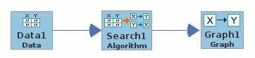
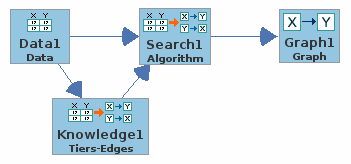
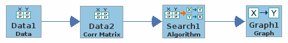

Tetrad Express
Description
A Cytoscape application (plugin) for running a simple causal model search.
Purpose
Provide a basic user-friendly interface for running a simple search algorithm from Tetrad.
Workflow
Below are the workflows you can peform:
Workflow 1: Simple Search
This is the simplest workflow to run a simple search. Figure 1 shows the same workflow in Tetrad.
- Import data.
- Select algorithm.
- Set algorithm parameters.
- Run search.
- Display graph.
|  |
|---|
| Figure 1. |
Workflow 2: Add Knowledge
This workflow is to add additional knowledge to the dataset. Figure 2 shows the same workflow in Tetrad.
- Import data.
- Select knowledge type.
- Set knowledge.
- Select algorithm.
- Set algorithm parameters.
- Run search.
- Display graph.
|  |
|---|
| Figure 2. |
Workflow 3: Apply Data Transformation
This workflow is to apply data transformation to the dataset. Figure 3 shows the same workflow in Tetrad.
- Import data.
- Edit the data:
- Select a data transformation.
- Select algorithm.
- Set algorithm parameters.
- Run search.
- Display graph.
|  |
|---|
| Figure 3. |